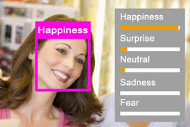
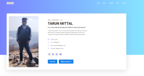

Home
About
Projects
Projects
Education
Workshop
Traning
Certification
Internship
Blog
Blog
Contact
My Projects
List of Some Projects on which I have worked.

Emotion Detection Through Human Face Images Using Deep Learning
Human Emotion detection from image is one of the most powerful and challenging research task in social communication. Deep learning (DL) based emotion detection gives performance better than traditional methods with image processing.So,I made Emotion-Detection-Through-Human-Face-Images-Using-DL
View Code
Detection of Credit card transaction
Using your credit card to buy online, as a mobile wallet or for a simple payment to a merchant has become a daily action for most cardholders. The virtual world and technological development that we know, makes banking transactions become digitized.As a result, a flow of millions of online transactions is subject to various types of fraud.
View Code
Insurance Prediction
The aim of this challenge is to predict whether the customer will be interested in buying insurance.I use ML technique to identify the customer's interest in insurance using past data. I used Linear regression technique in this project to identify the customer's interest in insurance using past data.
View Code
Trainable image Classifier
An online collection of Various Image data online using webcam and trained that data and after that convert it into trainable model. I also added the download model feature so that anyone can use model directly.It is created with the assistance of systems like a flagon, Tensorflow.js, and programming dialects including python and javascript.
View Code
WhatsApp Automation
Have you ever wished to automatically wish your friends on their birthdays, or send a set of messages to your friend ( or any Whastapp contact! ) automatically at a pre-set time, or send your friends by sending thousands of random text on whatsapp! Using Browser Automation you can do all of it and much more!.
View Code

Personal portfolio
Personal portfolio are consistent that need to be taken care of throughout your work. You can easily display the samples of your work, details about yourself,completed projects in the past and better explain to your clients why they must use your services for their advantages.So for getting better opputunities.I made my personal portfolio using HTML,CSS,JS
Boostrap
View Project
 Detection of Credit card transaction
Detection of Credit card transaction